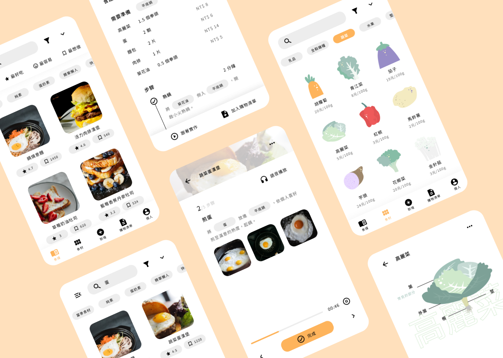
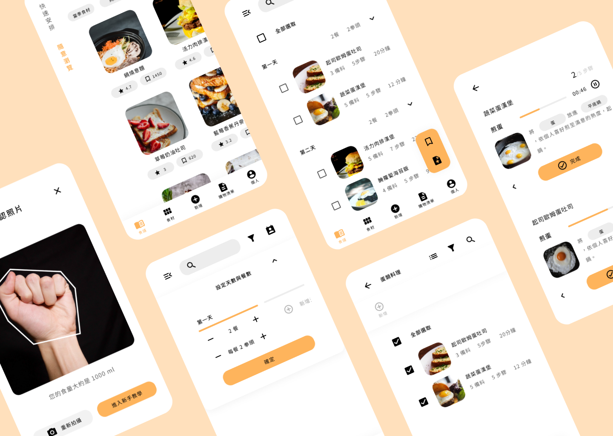

身分
使用者體驗、介面設計
工具
Miro, Figma
背景描述
有一位組員之前就有認識到剩食議題並對其產生興趣，後來我們三人開始做畢業專題的時候，接受那位同學的提議，將主題設定為”協助使用者減少剩食的產品”。
執行期間
2021 年 1 月 ~ 5 月
專案開發流程
背景研究
蒐集資料後我們得知在台灣大部分的食物浪費來自零售業者與消費者，因此我們想從離我們比較近的消費者著手，尋找預防剩食產生的方法。接下來我們尋找幾個與剩食議題或食物製作相關的產品，觀察它們如何解決問題。
訪談
我們的訪談對象可分為兩個族群，料理新手和小家庭烹飪者。我們從兩次訪談的結果當中找到消費者產生剩食的痛點有兩個，一個是料理新手不了解食材的處理方法導致浪費部分食材，另一個是超市賣的食材份量較多，兩類人皆可能無法在變質前用完食材。
確定方向
參考競爭對手與訪談結果後，我們決定的方向是”在製作食譜的手機應用程式中，加入協助使用者充分運用食材與時間的各項功能”。

人物誌
我們從訪談結果中找出兩個族群的個性、行為、痛點、目標與需求。兩個族群都想透過自己煮來省錢、想要快速做出多種料理。至於不同之處，料理新手想要學習做簡單的料理，小家庭烹飪者想要健康營養的料理。
顧客旅程地圖
我們分別列出兩個族群產生剩食的過程。我們先列出過程當中的階段，依序是規劃餐點內容、採買食材、製作料理、享用餐點、產生剩食、收拾，再寫出各階段的地點、行為、想法、情緒、痛點、需求、解決方案。
功能圖
我們從之前的解決方案中挑選出最有價值的幾個功能：
- 拳頭體積：讓使用者拍下拳頭的照片，估算拳頭的體積，之後可用來估計食量。
- 食材資訊：提供各種食材的挑選、處理、保存方法。
- 快速安排：推薦一系列的食譜，協助使用者將剩餘食材做成多種料理。
- 平行時間軸：將複數個食譜的步驟並排，方便使用者同時製作多個料理。

功能流程圖、介面流程圖
我們畫出功能流程圖，以描述各項功能的運作步驟。之後我們在介面流程圖中列出所有頁面、彈出視窗與通知訊息，當作線框圖的清單。
線框圖、視覺稿、原型
我們把各項功能與內容區塊安排在各頁面上，製作出線框圖，加入各種視覺元素後完成視覺稿。最後我們加上各頁面的不同狀態與互動設定，把視覺稿做成可以操作的原型。
易用性測試、迭代
我們請測試者依照任務腳本的指示去操作原型，於過程中觀察操作流程中出現的狀況，結束後請測試者填寫回饋表單，收集各方面的評價與建議。之後我們根據收集到的建議修改原型的各項不足之處，使操作體驗更流暢，之後再做一次易用性測試。第二次測試的回饋表單當中，有 75% 的測試者表示會想把這個應用程式推薦給別人，並且我們得到 8.5/10 的整體評價。